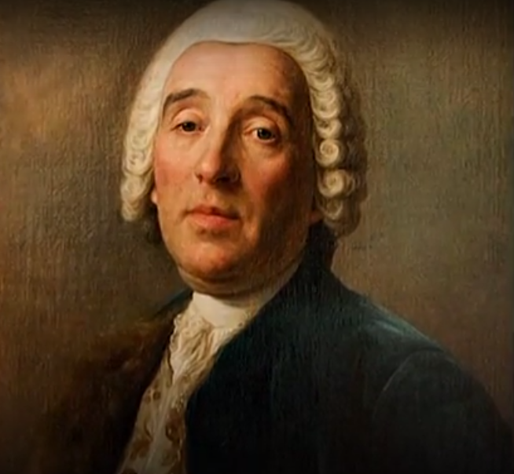

Годы жизни:
1700-1771
Франческо Растрелли — российский архитектор итальянского происхождения, академик архитектуры Императорской Академии художеств (1771).
Крупнейший представитель русского барокко, Растрелли сыграл определяющую роль в формировании этого стиля в русской архитектуре XVIII века.
Галлерея